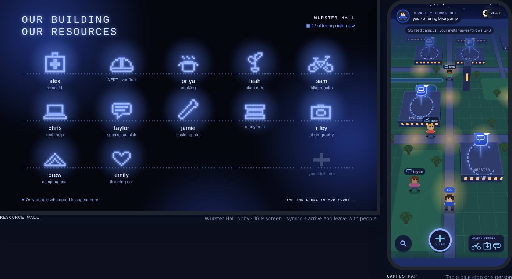
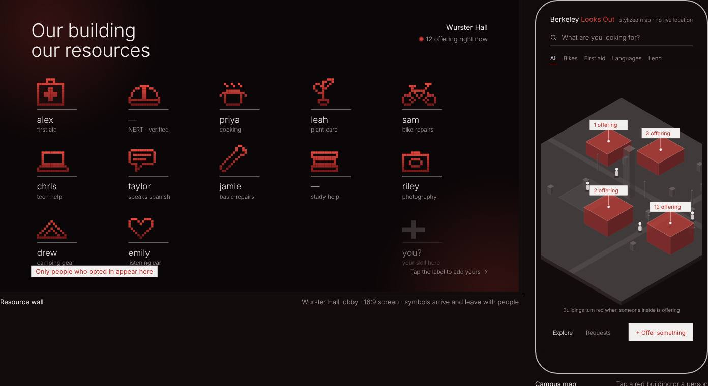
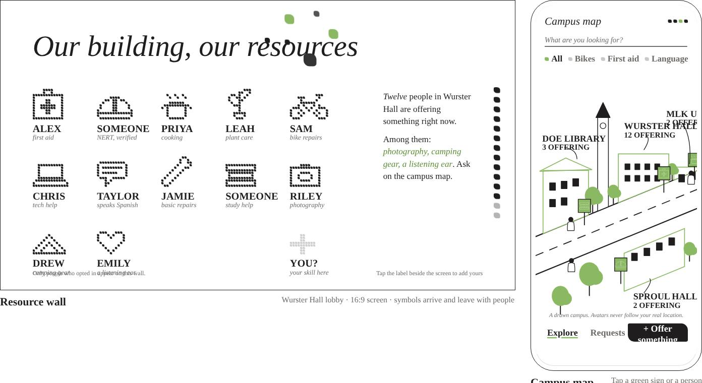
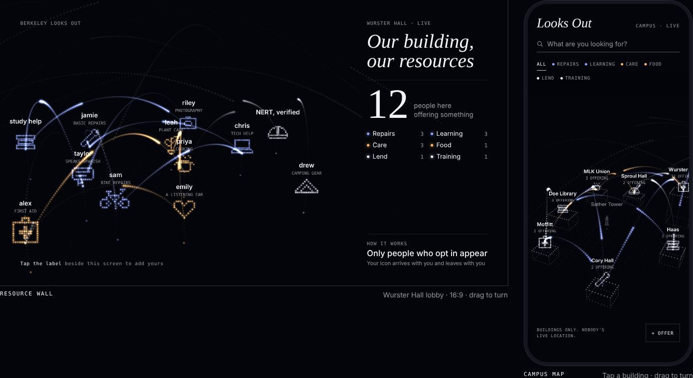
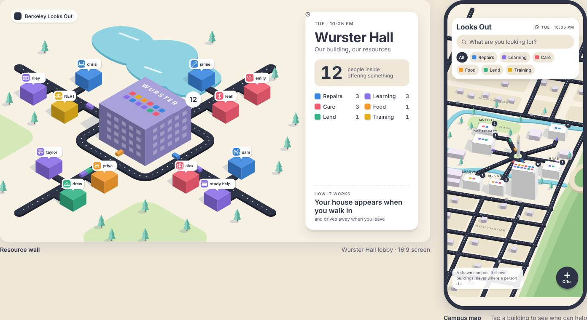
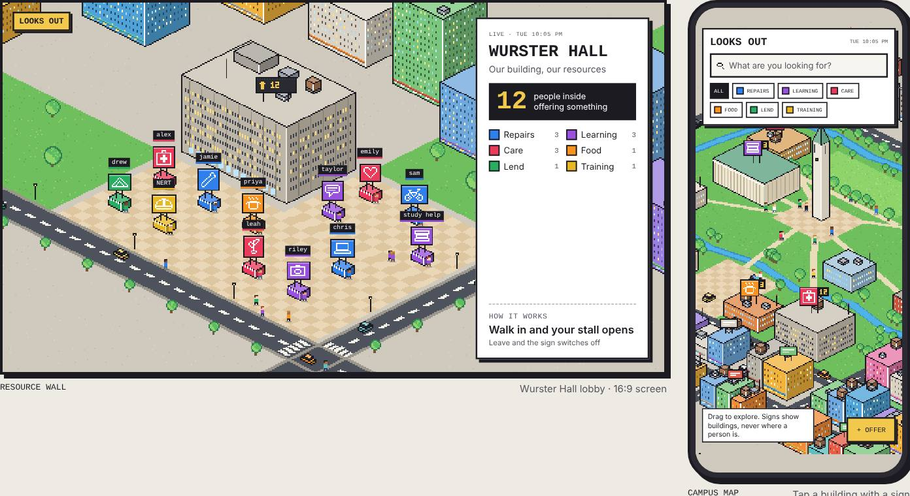
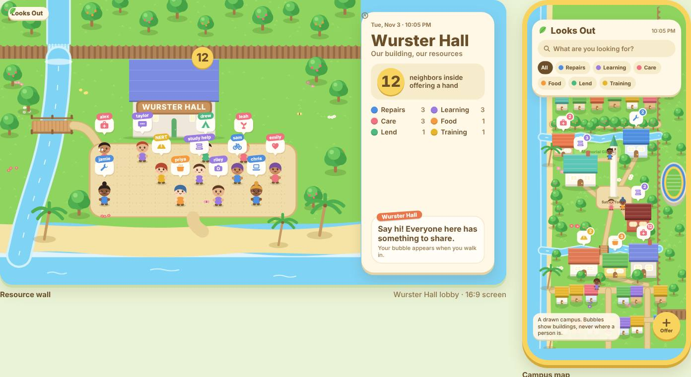

Every page shows the same two screens: the Resource Wall in the Wurster Hall lobby and the Campus Map on a phone. People, buildings and the flow between the two screens are the same throughout. Only the visual style changes.
Each card opens a working prototype. Use “All styles” at the bottom left to come back.
Watch the wall greet the new person and the phone map update at the same moment.
Filter by kind of help, tap a building, and send a request to a neighbor.

01Day and night modes. A tilted 3D campus with floating resource stops and pixel avatars, beside a wall lit by one soft, glowing color.
Open style
02Warm black, a translucent grey isometric campus and a single red. A building turns red when someone inside is offering help.
Open style
03White paper, ink line drawing and one leaf green, with italic serif and hand lettering. A drawn arrow points at whoever just walked in.
Open style
04A slowly turning field of light. Each resource is a pixel icon made of glowing particles, and threads connect people who offer similar help.
Open style
05An isometric toy town. Each person is a small colored house with a driveway into Wurster, and cars carry help across a tilted Berkeley campus.
Open style
06Dense isometric pixel art. Neighbors run small stalls with lit signs on the Wurster plaza, and the phone is a pixel Berkeley you drag to explore.
Open style
07Grass tiers, rivers and a beach. Round villagers say what they offer in speech bubbles, and the campus becomes an island with the Bay to the west.
Open style